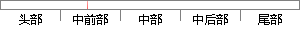

而本系统使用了实时短信验证的方式进行注册、登录，不去存储用户密码。
片段位置图

相似结果|
相似片段 1：是以短信注册方式进行注册。中心服务器经过验证注册信息后，通知合作运营商向注册用户发送注册成功短信，信息内容为用户注册密码。用户将收到注册短信，以供登录时使用。在用户首次登录成功后，系统将用户数据存储
相似片段 2：原因。41骤：这种登录方式只使用了用户的注册密码一种安全因素，安全性较弱，在本系统中只使用于用户注册时没有手机的情况。图5．4基于注册口令和附加码的登录界面第三种登录方式是基于用户的手机短信进行认证
相似片段 3：注册界面采用 LinearLayout 进行布局,主要控件为 TextView，EditText 和 Button。本系统使用手机号进行注册，并且为了确保用户的手机号的真实性，采用了短信验证的方式
|
※ 片段修改建议 ※
近似词参考：- 使用：利用
- 实时：及时
- 方式：体例 体式格局 方法
- 进行：举行
- 密码：暗码
系统自动生成语句：而本系统利用了及时短信验证的体例举行注册、登录，不去存储用户暗码。
注：本片段修改建议为系统自动生成，仅供参考。